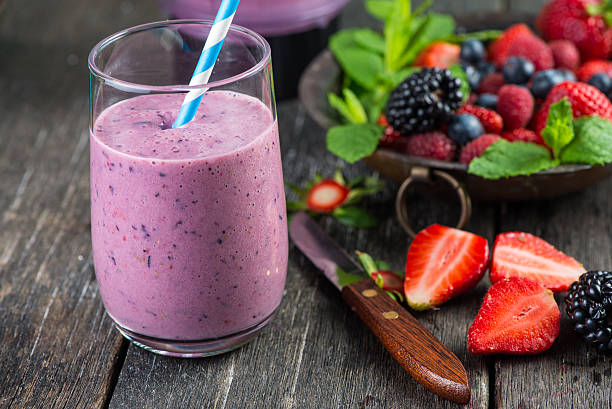
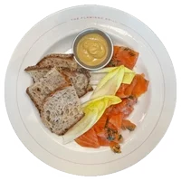

Pancakes

Ingredients:
- 1 cup all-purpose flour
- 1 tablespoon sugar
- 1 teaspoon baking powder
- 1/2 teaspoon salt
- 1 cup milk
- 1 large egg
- 2 tablespoons melted butter
Instructions:
- In a mixing bowl, combine the flour, sugar, baking powder, and salt.
- In a separate bowl, whisk together the milk, egg, and melted butter.
- Pour the wet ingredients into the dry ingredients and stir until just combined.
- Heat a lightly oiled griddle or frying pan over medium-high heat.
- Pour or scoop the batter onto the griddle, using approximately 1/4 cup for each pancake.
- Cook until bubbles form on the surface, then flip and cook until golden brown on the other side.
- Serve hot with your favorite toppings.
Quinoa Salad

Ingredients:
- 1 cup quinoa
- 2 cups water
- 1 cucumber, diced
- 1 red bell pepper, diced
- 1/2 red onion, thinly sliced
- 1/4 cup chopped fresh parsley
- 1/4 cup olive oil
- 2 tablespoons lemon juice
- Salt and pepper to taste
Instructions:
- Rinse the quinoa thoroughly in a fine-mesh sieve.
- In a saucepan, bring the water and quinoa to a boil. Reduce heat, cover, and simmer for 15 minutes or until the water is absorbed.
- Remove from heat and let it cool.
- In a large bowl, combine the cooked quinoa, cucumber, bell pepper, red onion, and parsley.
- In a small bowl, whisk together the olive oil, lemon juice, salt, and pepper.
- Pour the dressing over the quinoa mixture and toss to combine.
- Serve chilled or at room temperature.
Chocolate Chip Cookies
Ingredients:
- 1 cup unsalted butter, softened
- 1 cup granulated sugar
- 1 cup packed brown sugar
- 2 large eggs
- 1 teaspoon vanilla extract
- 3 cups all-purpose flour
- 1 teaspoon baking soda
- 1/2 teaspoon salt
- 2 cups chocolate chips
Instructions:
- Preheat oven to 350°F (175°C).
- In a large mixing bowl, cream together the butter, granulated sugar, and brown sugar until smooth.
- Beat in the eggs one at a time, then stir in the vanilla.
- In a separate bowl, combine the flour, baking soda, and salt.
- Add the dry ingredients to the wet ingredients and mix well.
- Stir in the chocolate chips.
- Drop rounded tablespoons of dough onto ungreased baking sheets.
- Bake for 8 to 10 minutes or until golden brown.
- Cool on wire racks.
Crispy Fried Tofu Nuggets
Ingredients:
- 1 block of firm tofu
- 1/2 cup all-purpose flour
- 1/2 cup cornstarch
- 1 teaspoon paprika
- 1/2 teaspoon garlic powder
- 1/2 teaspoon salt
- 1/4 teaspoon black pepper
- 1 cup plant-based milk (e.g., soy milk)
- Vegetable oil for frying
Instructions:
- Drain the tofu and press it between paper towels to remove excess moisture. Cut the tofu into bite-sized cubes.
- In a shallow bowl, whisk together the flour, cornstarch, paprika, garlic powder, salt, and black pepper.
- Pour the plant-based milk into another shallow bowl.
- Dip each tofu cube into the plant-based milk and then coat it with the flour mixture.
- In a large skillet, heat vegetable oil over medium-high heat.
- Add the tofu cubes to the skillet in a single layer and fry until golden brown and crispy on all sides.
- Transfer the fried tofu nuggets to a plate lined with paper towels to drain excess oil.
- Serve hot with your favorite dipping sauce.
Crunchy Fried Cauliflower Bites
Ingredients:
- 1 small head of cauliflower, cut into florets
- 1 cup all-purpose flour
- 1 teaspoon paprika
- 1/2 teaspoon garlic powder
- 1/2 teaspoon onion powder
- 1/2 teaspoon salt
- 1/4 teaspoon black pepper
- 1 cup sparkling water
- Vegetable oil for frying
Instructions:
- In a large bowl, whisk together the flour, paprika, garlic powder, onion powder, salt, and black pepper.
- Add the sparkling water to the flour mixture and whisk until smooth, creating a batter.
- Heat vegetable oil in a deep pot or skillet to 350°F (175°C).
- Dip each cauliflower floret into the batter, allowing any excess batter to drip off.
- Carefully place the battered cauliflower into the hot oil, frying in small batches to avoid overcrowding.
- Fry the cauliflower for about 4-5 minutes or until golden brown and crispy.
- Use a slotted spoon to remove the fried cauliflower from the oil and transfer it to a plate lined with paper towels.
- Repeat the process with the remaining cauliflower florets.
- Serve hot with your favorite dipping sauce.
Avocado Toast

Ingredients:
- 2 slices whole wheat bread, toasted
- 1 ripe avocado, pitted and sliced
- 1 small tomato, sliced
- 1 tablespoon lemon juice
- 1 tablespoon olive oil
- Salt and pepper to taste
- Red pepper flakes (optional)
Instructions:
- In a small bowl, mash the avocado slices with lemon juice, olive oil, salt, and pepper.
- Spread the mashed avocado mixture evenly on the toasted bread slices.
- Top with tomato slices.
- Sprinkle with red pepper flakes if desired.
- Serve immediately.
Berry Smoothie
Ingredients:
- 1 cup mixed berries (strawberries, blueberries, raspberries)
- 1 ripe banana
- 1 cup unsweetened almond milk
- 1/2 cup plain Greek yogurt
- 1 tablespoon honey
- 1/2 teaspoon vanilla extract
Instructions:
- In a blender, combine the mixed berries, banana, almond milk, Greek yogurt, honey, and vanilla extract.
- Blend until smooth and creamy.
- Pour into glasses and serve immediately.
Veggie Wrap
Ingredients:
- 1 large whole wheat tortilla
- 2 tablespoons hummus
- 1/4 cup sliced cucumbers
- 1/4 cup sliced bell peppers
- 1/4 cup shredded carrots
- 1/4 cup baby spinach leaves
- Salt and pepper to taste
Instructions:
- Spread the hummus evenly on the tortilla.
- Layer the cucumbers, bell peppers, shredded carrots, and baby spinach leaves on top of the hummus.
- Season with salt and pepper.
- Roll up the tortilla tightly.
- Cut in half and serve.
Vegetable Stir-Fry

Ingredients:
- 2 tablespoons vegetable oil
- 2 cloves garlic, minced
- 1 red bell pepper, thinly sliced
- 1 yellow bell pepper, thinly sliced
- 1 small broccoli crown, cut into florets
- 1 zucchini, sliced
- 1 carrot, thinly sliced
- 1/4 cup soy sauce
- 1 tablespoon oyster sauce
- 1 tablespoon honey
- 1 teaspoon sesame oil
- 1/4 cup chopped green onions
- Sesame seeds for garnish
Instructions:
- Heat the vegetable oil in a large skillet or wok over medium-high heat.
- Add the garlic and sauté for 1 minute.
- Add the bell peppers, broccoli, zucchini, and carrot. Stir-fry for 3-4 minutes or until the vegetables are tender-crisp.
- In a small bowl, whisk together the soy sauce, oyster sauce, honey, and sesame oil.
- Pour the sauce over the vegetables and stir to coat evenly.
- Cook for an additional 1-2 minutes or until the sauce has thickened slightly.
- Remove from heat and sprinkle with chopped green onions and sesame seeds.
- Serve hot over steamed rice or noodles.
Caprese Salad
Ingredients:
- 4 ripe tomatoes, sliced
- 8 ounces fresh mozzarella cheese, sliced
- 1/2 cup fresh basil leaves
- 2 tablespoons balsamic glaze
- 2 tablespoons olive oil
- Salt and pepper to taste
Instructions:
- Alternate the tomato slices and mozzarella slices on a platter.
- Tuck the fresh basil leaves in between the tomato and mozzarella slices.
- Drizzle the balsamic glaze and olive oil over the salad.
- Season with salt and pepper.
- Serve immediately.

Grilled Salmon

Ingredients:
- 4 salmon fillets
- 2 tablespoons olive oil
- 2 tablespoons lemon juice
- 2 cloves garlic, minced
- 1 teaspoon dried dill
- Salt and pepper to taste
Instructions:
- In a small bowl, whisk together the olive oil, lemon juice, garlic, dried dill, salt, and pepper.
- Place the salmon fillets in a shallow dish and pour the marinade over them. Let them marinate for 30 minutes.
- Preheat grill to medium heat.
- Remove the salmon fillets from the marinade and place them on the grill.
- Grill for about 4-6 minutes per side or until the salmon is cooked through and flakes easily with a fork.
- Serve hot.

Greek Salad

Ingredients:
- 4 cups chopped romaine lettuce
- 1 cucumber, diced
- 1 red bell pepper, diced
- 1/2 red onion, thinly sliced
- 1 cup cherry tomatoes, halved
- 1/2 cup sliced Kalamata olives
- 1/2 cup crumbled feta cheese
- 2 tablespoons olive oil
- 1 tablespoon red wine vinegar
- 1 teaspoon dried oregano
- Salt and pepper to taste
Instructions:
- In a large bowl, combine the romaine lettuce, cucumber, bell pepper, red onion, cherry tomatoes, Kalamata olives, and feta cheese.
- In a small bowl, whisk together the olive oil, red wine vinegar, dried oregano, salt, and pepper.
- Pour the dressing over the salad and toss to combine.
- Serve immediately.
About
At our website, we believe that eating well shouldn't mean sacrificing taste or enjoyment. We are passionate about promoting a healthy lifestyle through delicious and nutritious recipes that are easy to prepare. Whether you're looking for quick and simple weekday meals, vibrant salads, satisfying main courses, or delightful desserts, our collection of recipes has got you covered.
We understand the importance of making wholesome choices when it comes to food, and that's why all our recipes are thoughtfully crafted to provide a balance of nutrients, using fresh and seasonal ingredients. From vegetarian and vegan options to gluten-free and dairy-free alternatives, we offer a wide variety of recipes to cater to various dietary preferences and requirements.
Our website is designed to be a comprehensive resource for all your culinary needs. Each recipe includes a detailed list of ingredients, clear step-by-step instructions, and helpful tips to ensure your success in the kitchen. We strive to make cooking accessible and enjoyable for everyone, whether you're a seasoned home cook or just starting your culinary journey.
We believe that healthy eating is not about rigid diets or deprivation but about nourishing your body with wholesome, flavorful meals. That's why we focus on creating recipes that are not only good for you but also incredibly delicious. We believe that food should be a source of joy, and our recipes are designed to excite your taste buds and leave you feeling satisfied and energized.
Healthy food is important for several reasons:
1. Nutritional Benefits: Healthy foods provide essential nutrients, vitamins, and minerals that are necessary for the proper functioning of our bodies. These nutrients help maintain optimal health, support growth and development, boost the immune system, and prevent various diseases.
2. Weight Management: Eating a balanced diet that includes a variety of healthy foods can help manage weight effectively. Healthy foods are often lower in calories and higher in nutrients, which can help prevent overeating and maintain a healthy body weight.
3. Disease Prevention: A diet rich in fruits, vegetables, whole grains, lean proteins, and healthy fats can help reduce the risk of chronic diseases such as heart disease, type 2 diabetes, certain cancers, and obesity. These foods are typically high in antioxidants, fiber, and other beneficial compounds that promote good health and protect against various health conditions.
4. Energy and Productivity: Healthy foods provide a steady source of energy, helping to fuel our bodies and enhance overall productivity. Foods high in refined sugars and unhealthy fats can cause energy crashes and lead to sluggishness, while nutritious foods provide sustained energy levels throughout the day.
5. Mental Well-being: There is a strong connection between diet and mental health. A healthy diet can positively impact brain function and mood, reducing the risk of mental health disorders such as depression and anxiety. Nutrient-rich foods, such as those containing omega-3 fatty acids, can support brain health and cognitive function.
6. Longevity: A well-balanced diet consisting of wholesome foods can contribute to a longer and healthier life. By providing essential nutrients and reducing the risk of chronic diseases, healthy eating habits can increase life expectancy and improve overall quality of life.
7. Stronger Immune System: Proper nutrition is vital for a strong immune system. Nutrient deficiencies can weaken the immune system, making us more susceptible to infections and illnesses. Consuming a variety of fruits, vegetables, whole grains, and lean proteins provides the necessary nutrients to support immune function and help fight off pathogens.
In summary, healthy food is important because it provides the necessary nutrients, helps maintain a healthy weight, prevents diseases, boosts energy levels, supports mental well-being, promotes longevity, and strengthens the immune system. By making conscious choices to incorporate healthy foods into our diet, we can improve our overall health and well-being.
We understand the importance of making wholesome choices when it comes to food, and that's why all our recipes are thoughtfully crafted to provide a balance of nutrients, using fresh and seasonal ingredients. From vegetarian and vegan options to gluten-free and dairy-free alternatives, we offer a wide variety of recipes to cater to various dietary preferences and requirements.
Our website is designed to be a comprehensive resource for all your culinary needs. Each recipe includes a detailed list of ingredients, clear step-by-step instructions, and helpful tips to ensure your success in the kitchen. We strive to make cooking accessible and enjoyable for everyone, whether you're a seasoned home cook or just starting your culinary journey.
We believe that healthy eating is not about rigid diets or deprivation but about nourishing your body with wholesome, flavorful meals. That's why we focus on creating recipes that are not only good for you but also incredibly delicious. We believe that food should be a source of joy, and our recipes are designed to excite your taste buds and leave you feeling satisfied and energized.
Healthy food is important for several reasons:
1. Nutritional Benefits: Healthy foods provide essential nutrients, vitamins, and minerals that are necessary for the proper functioning of our bodies. These nutrients help maintain optimal health, support growth and development, boost the immune system, and prevent various diseases.
2. Weight Management: Eating a balanced diet that includes a variety of healthy foods can help manage weight effectively. Healthy foods are often lower in calories and higher in nutrients, which can help prevent overeating and maintain a healthy body weight.
3. Disease Prevention: A diet rich in fruits, vegetables, whole grains, lean proteins, and healthy fats can help reduce the risk of chronic diseases such as heart disease, type 2 diabetes, certain cancers, and obesity. These foods are typically high in antioxidants, fiber, and other beneficial compounds that promote good health and protect against various health conditions.
4. Energy and Productivity: Healthy foods provide a steady source of energy, helping to fuel our bodies and enhance overall productivity. Foods high in refined sugars and unhealthy fats can cause energy crashes and lead to sluggishness, while nutritious foods provide sustained energy levels throughout the day.
5. Mental Well-being: There is a strong connection between diet and mental health. A healthy diet can positively impact brain function and mood, reducing the risk of mental health disorders such as depression and anxiety. Nutrient-rich foods, such as those containing omega-3 fatty acids, can support brain health and cognitive function.
6. Longevity: A well-balanced diet consisting of wholesome foods can contribute to a longer and healthier life. By providing essential nutrients and reducing the risk of chronic diseases, healthy eating habits can increase life expectancy and improve overall quality of life.
7. Stronger Immune System: Proper nutrition is vital for a strong immune system. Nutrient deficiencies can weaken the immune system, making us more susceptible to infections and illnesses. Consuming a variety of fruits, vegetables, whole grains, and lean proteins provides the necessary nutrients to support immune function and help fight off pathogens.
In summary, healthy food is important because it provides the necessary nutrients, helps maintain a healthy weight, prevents diseases, boosts energy levels, supports mental well-being, promotes longevity, and strengthens the immune system. By making conscious choices to incorporate healthy foods into our diet, we can improve our overall health and well-being.